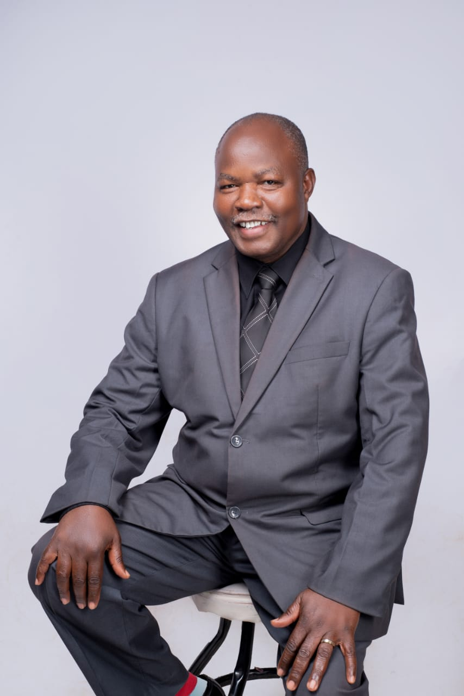
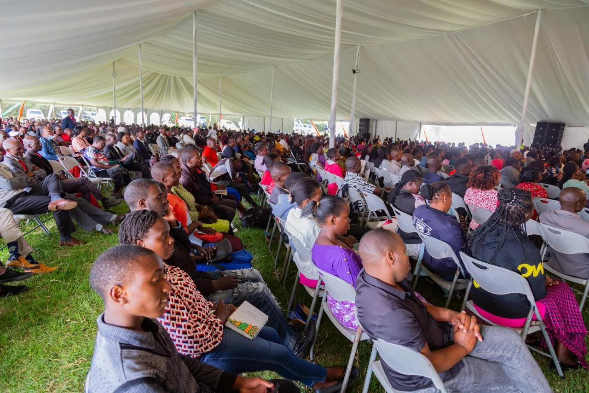
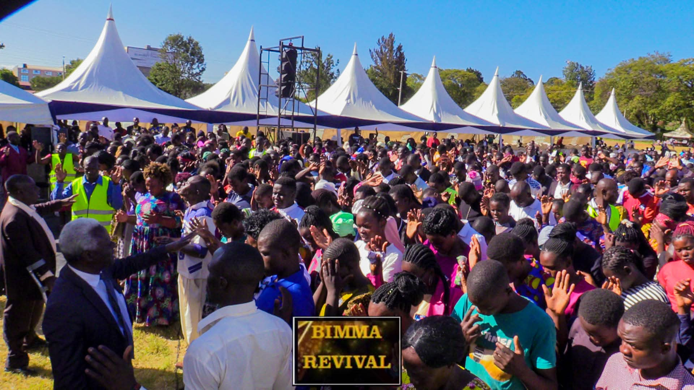
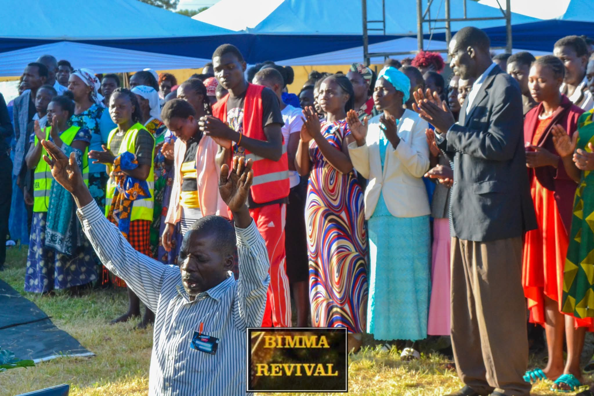
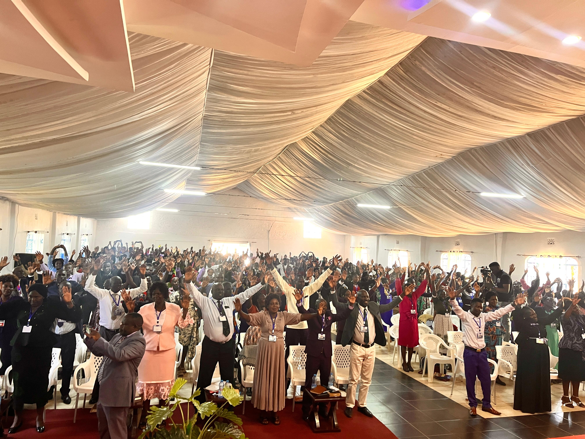
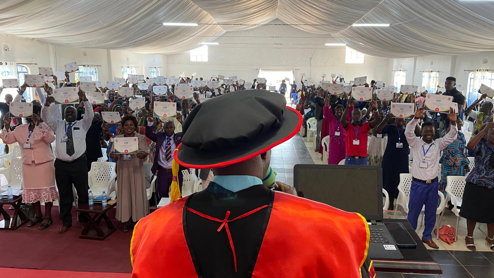
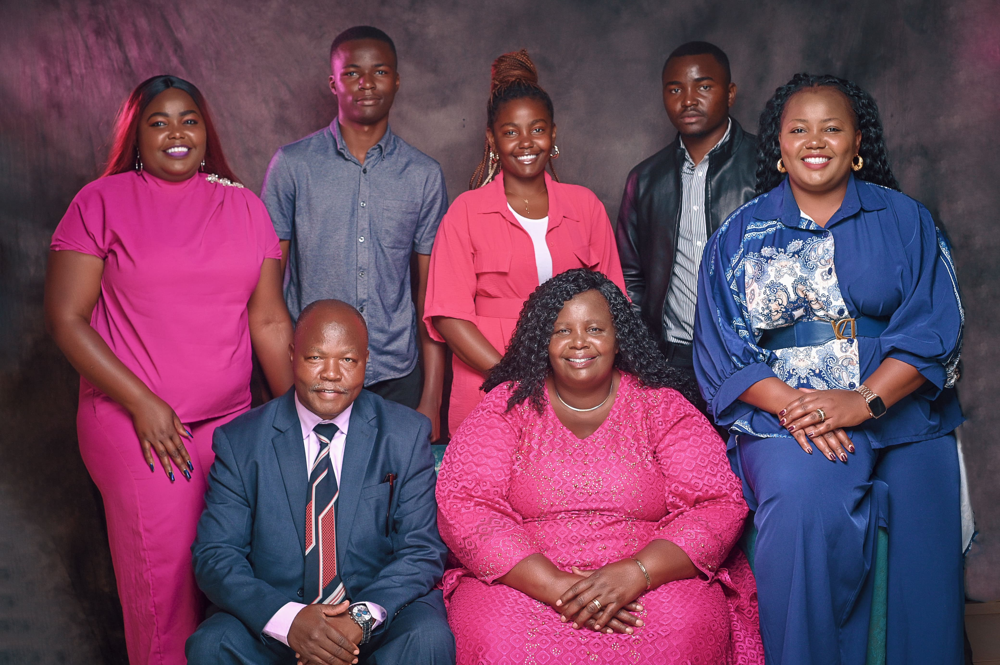
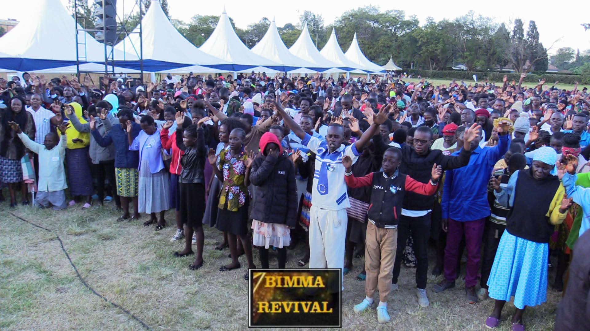

Founder & Presiding Bishop, Halleluyah Churches
Revivalist · International Speaker · Author
"A distinguished servant of God, visionary leader, and seasoned minister of the Gospel who dedicated his life to the Lord in 1988 — proclaiming the Word with authority, accompanied by signs and wonders."

Bishop Dr. Zablon Amuliodo Malema is a distinguished servant of God, visionary leader, and seasoned minister of the Gospel who dedicated his life to the Lord in 1988. In 1991, he answered the divine call into pastoral ministry, marking the beginning of a remarkable journey of faith, leadership, and global impact.
Renowned as an international speaker, Bishop Malema has traversed nations, proclaiming the Word of God with authority, accompanied by signs and wonders. Widely regarded as a revivalist of this generation, his ministry continues to inspire spiritual awakening and transformation.
Academically accomplished, Bishop Malema has pursued professional training and extensive theological training. His credentials include a Pastors' Enhancement Certificate from Kisii University, an Advanced Diploma in Ministry from the Ministry Training Institute in Kuala Lumpur, Malaysia, and a Diploma in Public Administration from Kisii University. He also holds a Bachelor of Theology from Eldoret Bible College and a Bachelor of Arts in Public Administration and Political Science at Kisii University. In recognition of his profound contribution to Christian missions, he was awarded an Honorary Doctorate Degree from Lead Impact University, USA.
In addition to his pastoral calling, Bishop Malema serves as the Rift Valley Regional Director of the Kenya National Congress of Pentecostal Churches (KNCPC) and as Chaplain at Kisii University – Eldoret Campus. He has also played a pivotal role as Director of the National Prayer Programme Against Road Carnage in Kenya, championing spiritual and societal intervention against road tragedies.
A respected voice in media, he is a prominent television and radio preacher, currently serving as the Chairman of the African Ministers Network (AMN) – East Africa Chapter, and CEO of Emmanuel Rehabilitation Center. Bishop Malema is a Certified Professional Mediator and an author, best known for his books, A Pastor with a Book and Seven Steps to Effective Living. His extensive service and leadership were recognized globally when he was hornored among the Top 100 international Leaders. .
Bishop Malema Mission for Africa (BIMMA) is a Christian outreach ministry dedicated to proclaiming the Gospel of Jesus Christ across the African continent. Led by Bishop Dr. Malema, the mission seeks to inspire faith, transform lives, and advance the Kingdom of God. Through evangelism, discipleship, and community engagement, BIMMA reaches out to people in all African nations with the message of Christ's love and salvation.
From his dedication to the Lord in 1988 to building a global ministry — the milestones that define Bishop Malema's calling.
Every role Bishop Malema holds is an expression of his broad calling — from the local pulpit to continental and international platforms.
Bishop Malema has pursued professional training and extensive theological formation across Kenya, Malaysia, and the United States.
Bishop Malema is a published author whose writings extend his ministry beyond the pulpit into homes, offices, and nations worldwide.
A literary contribution from Bishop Malema on pastoral ministry, drawing from decades of experience as a servant of the Gospel.
A transformative guide to purposeful living, drawing on Bishop Malema's wisdom as a visionary leader, minister, and Certified Professional Mediator.
A life of excellence — from founding a vibrant church network to receiving international recognition for contributions to Christian missions.
Bishop Malema's ministry extends beyond the pulpit — addressing national crises, rehabilitating lives, training chaplains, and shaping public discourse through faith.
Bishop Malema carries the Word of God to the nations — through television, radio, international conference platforms, and the written word.
He is happily married to Rev. Leah Musimbi Malema, and together they are blessed with five children and three grandchildren.
A visual record of ministry, leadership, speaking engagements, and community impact moments from Bishop Malema's journey.







For speaking engagements, ministry partnerships, media enquiries, or to connect with Halleluyah Churches and the African Ministers Network — East Africa Chapter.